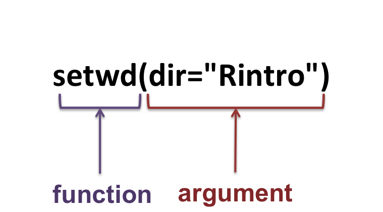
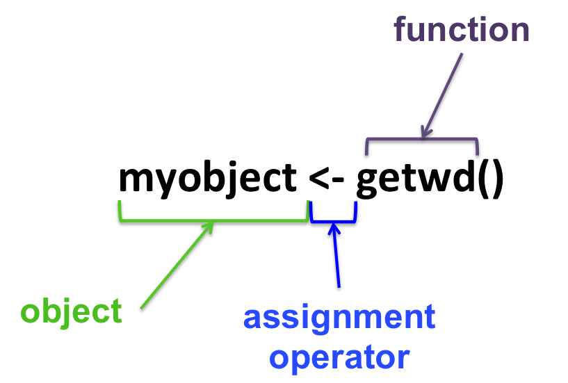
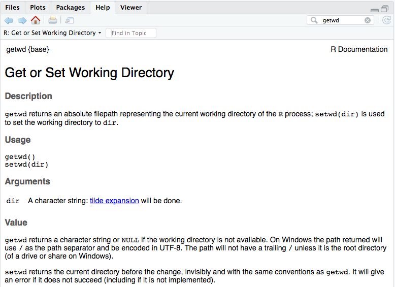

Part6 Functions
In programming, a function is a section of a program that performs a specific task.
For example, the function getwd is used as:
and has the task of outputting the current working directory.
You can recognize a function with the round brackets: function()
A function can also take arguments/parameters
setwd changes the current working directory and takes one argument dir.

- Assign the output of a function to an object:

- Getting help:
From the terminal:
From the RStudio bottom-right panel:

- The help pages show:
- required/optional argument(s), if any.
- default values for each argument(s), if any.
- examples.
- detailed description.
- Get the example of a function:
##
## mean> ## ---------------------------------------------------------------------
## mean> ## BIND DelayedArray OBJECTS
## mean> ## ---------------------------------------------------------------------
## mean> ## DelayedArray objects can be bound along their 1st (rows) or 2nd
## mean> ## (columns) dimension with rbind() or cbind(). These operations are
## mean> ## equivalent to arbind() and acbind(), respectively, and are all
## mean> ## delayed.
## mean>
## mean> ## On 2D objects:
## mean> library(HDF5Array)
##
## mean> toy_h5 <- system.file("extdata", "toy.h5", package="HDF5Array")
##
## mean> h5ls(toy_h5)
## group name otype dclass dim
## 0 / M1 H5I_DATASET FLOAT 10000 x 150
## 1 / M2 H5I_DATASET FLOAT 150 x 200
##
## mean> M1 <- HDF5Array(toy_h5, "M1")
##
## mean> M2 <- HDF5Array(toy_h5, "M2")
##
## mean> M12 <- rbind(M1, t(M2)) # delayed
##
## mean> M12
## <10200 x 150> DelayedMatrix object of type "double":
## [,1] [,2] [,3] ... [,149] [,150]
## [1,] 0.44015009 0.02303051 0.11688992 . 0.6684808 0.9859835
## [2,] 0.18883376 0.84313244 0.12153315 . 0.2886549 0.2750908
## [3,] 0.99232698 0.22924928 0.20998143 . 0.4786133 0.7087926
## [4,] 0.52631346 0.15438076 0.43283016 . 0.8715839 0.5870442
## [5,] 0.62369062 0.27622849 0.54027815 . 0.3082406 0.2929455
## ... . . . . . .
## [10196,] 12.7122663 3.0340890 -1.4169923 . 6.924539558 2.991194399
## [10197,] -1.1921119 12.1553961 10.3398257 . 13.541424135 10.732108410
## [10198,] 11.2522507 6.2994228 0.8515161 . 3.639222663 -2.787210229
## [10199,] 4.2025030 14.8541228 0.5208430 . 13.590451800 -0.007439521
## [10200,] 7.2127450 3.4810124 8.8763231 . 2.134752800 7.164514768
##
## mean> colMeans(M12) # block-processed
## [1] 0.5847215 0.5976341 0.5955049 0.5898834 0.5838513 0.5954696 0.5794771
## [8] 0.6017740 0.5907392 0.5921464 0.5972239 0.5886432 0.5893401 0.5796834
## [15] 0.5832794 0.5984886 0.5789885 0.5981562 0.5994559 0.5902942 0.5964307
## [22] 0.6017652 0.5909635 0.5860712 0.6012874 0.5906832 0.5743288 0.5757507
## [29] 0.5903412 0.5894468 0.6071159 0.5902459 0.5924693 0.5931731 0.5849759
## [36] 0.5987650 0.5686553 0.5954116 0.5929792 0.5807617 0.5858967 0.5768919
## [43] 0.5849780 0.5969409 0.5945609 0.5873373 0.5985127 0.5845567 0.5835624
## [50] 0.5800856 0.5959954 0.5941727 0.5985898 0.5870470 0.6016754 0.5971824
## [57] 0.5831226 0.5983267 0.5776760 0.5897750 0.5999326 0.5885997 0.5859833
## [64] 0.5898483 0.5900072 0.5802166 0.5715231 0.5925759 0.5869830 0.5853867
## [71] 0.6074465 0.5927962 0.5836831 0.5884932 0.6034180 0.5994154 0.5905539
## [78] 0.5871405 0.5956231 0.5997698 0.5948899 0.5921457 0.5785114 0.5849732
## [85] 0.5893467 0.5836812 0.5997758 0.5696571 0.5831440 0.5806131 0.5908729
## [92] 0.5834960 0.5965191 0.5861503 0.5967210 0.5776620 0.5914219 0.5981962
## [99] 0.5892449 0.5991614 0.5872962 0.5842013 0.5884512 0.5855686 0.5818349
## [106] 0.5931897 0.5872042 0.5784551 0.5808937 0.5800662 0.5910112 0.5863131
## [113] 0.6002801 0.5898960 0.5901466 0.5949233 0.5946853 0.5901424 0.5939904
## [120] 0.5931327 0.5913019 0.5958614 0.5839785 0.5904047 0.5854432 0.5929187
## [127] 0.6018140 0.5920462 0.5989337 0.5951392 0.5878220 0.5809505 0.5850140
## [134] 0.5848444 0.5824954 0.5911507 0.5864913 0.6020472 0.5830223 0.5879107
## [141] 0.5743987 0.5840778 0.5876115 0.6024942 0.5866054 0.5940235 0.5877663
## [148] 0.5967996 0.5944947 0.6009553
##
## mean> ## On objects with more than 2 dimensions:
## mean> example(arbind) # to create arrays a1, a2, a3
##
## arbind> a1 <- array(1:60, c(3, 5, 4),
## arbind+ dimnames=list(NULL, paste0("M1y", 1:5), NULL))
##
## arbind> a2 <- array(101:240, c(7, 5, 4),
## arbind+ dimnames=list(paste0("M2x", 1:7), paste0("M2y", 1:5), NULL))
##
## arbind> a3 <- array(10001:10100, c(5, 5, 4),
## arbind+ dimnames=list(paste0("M3x", 1:5), NULL, paste0("M3z", 1:4)))
##
## arbind> arbind(a1, a2, a3)
## , , M3z1
##
## M1y1 M1y2 M1y3 M1y4 M1y5
## 1 4 7 10 13
## 2 5 8 11 14
## 3 6 9 12 15
## M2x1 101 108 115 122 129
## M2x2 102 109 116 123 130
## M2x3 103 110 117 124 131
## M2x4 104 111 118 125 132
## M2x5 105 112 119 126 133
## M2x6 106 113 120 127 134
## M2x7 107 114 121 128 135
## M3x1 10001 10006 10011 10016 10021
## M3x2 10002 10007 10012 10017 10022
## M3x3 10003 10008 10013 10018 10023
## M3x4 10004 10009 10014 10019 10024
## M3x5 10005 10010 10015 10020 10025
##
## , , M3z2
##
## M1y1 M1y2 M1y3 M1y4 M1y5
## 16 19 22 25 28
## 17 20 23 26 29
## 18 21 24 27 30
## M2x1 136 143 150 157 164
## M2x2 137 144 151 158 165
## M2x3 138 145 152 159 166
## M2x4 139 146 153 160 167
## M2x5 140 147 154 161 168
## M2x6 141 148 155 162 169
## M2x7 142 149 156 163 170
## M3x1 10026 10031 10036 10041 10046
## M3x2 10027 10032 10037 10042 10047
## M3x3 10028 10033 10038 10043 10048
## M3x4 10029 10034 10039 10044 10049
## M3x5 10030 10035 10040 10045 10050
##
## , , M3z3
##
## M1y1 M1y2 M1y3 M1y4 M1y5
## 31 34 37 40 43
## 32 35 38 41 44
## 33 36 39 42 45
## M2x1 171 178 185 192 199
## M2x2 172 179 186 193 200
## M2x3 173 180 187 194 201
## M2x4 174 181 188 195 202
## M2x5 175 182 189 196 203
## M2x6 176 183 190 197 204
## M2x7 177 184 191 198 205
## M3x1 10051 10056 10061 10066 10071
## M3x2 10052 10057 10062 10067 10072
## M3x3 10053 10058 10063 10068 10073
## M3x4 10054 10059 10064 10069 10074
## M3x5 10055 10060 10065 10070 10075
##
## , , M3z4
##
## M1y1 M1y2 M1y3 M1y4 M1y5
## 46 49 52 55 58
## 47 50 53 56 59
## 48 51 54 57 60
## M2x1 206 213 220 227 234
## M2x2 207 214 221 228 235
## M2x3 208 215 222 229 236
## M2x4 209 216 223 230 237
## M2x5 210 217 224 231 238
## M2x6 211 218 225 232 239
## M2x7 212 219 226 233 240
## M3x1 10076 10081 10086 10091 10096
## M3x2 10077 10082 10087 10092 10097
## M3x3 10078 10083 10088 10093 10098
## M3x4 10079 10084 10089 10094 10099
## M3x5 10080 10085 10090 10095 10100
##
##
## mean> A1 <- DelayedArray(a1)
##
## mean> A2 <- DelayedArray(a2)
##
## mean> A3 <- DelayedArray(a3)
##
## mean> A123 <- rbind(A1, A2, A3) # delayed
##
## mean> A123
## <15 x 5 x 4> DelayedArray object of type "integer":
## ,,M3z1
## M1y1 M1y2 M1y3 M1y4 M1y5
## 1 4 7 10 13
## 2 5 8 11 14
## ... . . . . .
## M3x4 10004 10009 10014 10019 10024
## M3x5 10005 10010 10015 10020 10025
##
## ...
##
## ,,M3z4
## M1y1 M1y2 M1y3 M1y4 M1y5
## 46 49 52 55 58
## 47 50 53 56 59
## ... . . . . .
## M3x4 10079 10084 10089 10094 10099
## M3x5 10080 10085 10090 10095 10100
##
##
## mean> ## On 1D objects:
## mean> v1 <- array(11:15, 5, dimnames=list(LETTERS[1:5]))
##
## mean> v2 <- array(letters[1:3])
##
## mean> V1 <- DelayedArray(v1)
##
## mean> V2 <- DelayedArray(v2)
##
## mean> V12 <- rbind(V1, V2)
##
## mean> V12
## <8> DelayedArray object of type "character":
## A B C .
## "11" "12" "13" . "b" "c"
##
## mean> ## Not run:
## mean> ##D cbind(V1, V2) # Error! (the objects to cbind() must have at least 2
## mean> ##D # dimensions)
## mean> ## End(Not run)
## mean>
## mean> ## Note that base::rbind() and base::cbind() do something completely
## mean> ## different on ordinary arrays that are not matrices. They treat them
## mean> ## as if they were vectors:
## mean> rbind(a1, a2, a3)## Warning in rbind(...): number of columns of result is not a multiple of
## vector length (arg 1)## [,1] [,2] [,3] [,4] [,5] [,6] [,7] [,8] [,9] [,10] [,11] [,12]
## a1 1 2 3 4 5 6 7 8 9 10 11 12
## a2 101 102 103 104 105 106 107 108 109 110 111 112
## a3 10001 10002 10003 10004 10005 10006 10007 10008 10009 10010 10011 10012
## [,13] [,14] [,15] [,16] [,17] [,18] [,19] [,20] [,21] [,22] [,23] [,24]
## a1 13 14 15 16 17 18 19 20 21 22 23 24
## a2 113 114 115 116 117 118 119 120 121 122 123 124
## a3 10013 10014 10015 10016 10017 10018 10019 10020 10021 10022 10023 10024
## [,25] [,26] [,27] [,28] [,29] [,30] [,31] [,32] [,33] [,34] [,35] [,36]
## a1 25 26 27 28 29 30 31 32 33 34 35 36
## a2 125 126 127 128 129 130 131 132 133 134 135 136
## a3 10025 10026 10027 10028 10029 10030 10031 10032 10033 10034 10035 10036
## [,37] [,38] [,39] [,40] [,41] [,42] [,43] [,44] [,45] [,46] [,47] [,48]
## a1 37 38 39 40 41 42 43 44 45 46 47 48
## a2 137 138 139 140 141 142 143 144 145 146 147 148
## a3 10037 10038 10039 10040 10041 10042 10043 10044 10045 10046 10047 10048
## [,49] [,50] [,51] [,52] [,53] [,54] [,55] [,56] [,57] [,58] [,59] [,60]
## a1 49 50 51 52 53 54 55 56 57 58 59 60
## a2 149 150 151 152 153 154 155 156 157 158 159 160
## a3 10049 10050 10051 10052 10053 10054 10055 10056 10057 10058 10059 10060
## [,61] [,62] [,63] [,64] [,65] [,66] [,67] [,68] [,69] [,70] [,71] [,72]
## a1 1 2 3 4 5 6 7 8 9 10 11 12
## a2 161 162 163 164 165 166 167 168 169 170 171 172
## a3 10061 10062 10063 10064 10065 10066 10067 10068 10069 10070 10071 10072
## [,73] [,74] [,75] [,76] [,77] [,78] [,79] [,80] [,81] [,82] [,83] [,84]
## a1 13 14 15 16 17 18 19 20 21 22 23 24
## a2 173 174 175 176 177 178 179 180 181 182 183 184
## a3 10073 10074 10075 10076 10077 10078 10079 10080 10081 10082 10083 10084
## [,85] [,86] [,87] [,88] [,89] [,90] [,91] [,92] [,93] [,94] [,95] [,96]
## a1 25 26 27 28 29 30 31 32 33 34 35 36
## a2 185 186 187 188 189 190 191 192 193 194 195 196
## a3 10085 10086 10087 10088 10089 10090 10091 10092 10093 10094 10095 10096
## [,97] [,98] [,99] [,100] [,101] [,102] [,103] [,104] [,105] [,106]
## a1 37 38 39 40 41 42 43 44 45 46
## a2 197 198 199 200 201 202 203 204 205 206
## a3 10097 10098 10099 10100 10001 10002 10003 10004 10005 10006
## [,107] [,108] [,109] [,110] [,111] [,112] [,113] [,114] [,115] [,116]
## a1 47 48 49 50 51 52 53 54 55 56
## a2 207 208 209 210 211 212 213 214 215 216
## a3 10007 10008 10009 10010 10011 10012 10013 10014 10015 10016
## [,117] [,118] [,119] [,120] [,121] [,122] [,123] [,124] [,125] [,126]
## a1 57 58 59 60 1 2 3 4 5 6
## a2 217 218 219 220 221 222 223 224 225 226
## a3 10017 10018 10019 10020 10021 10022 10023 10024 10025 10026
## [,127] [,128] [,129] [,130] [,131] [,132] [,133] [,134] [,135] [,136]
## a1 7 8 9 10 11 12 13 14 15 16
## a2 227 228 229 230 231 232 233 234 235 236
## a3 10027 10028 10029 10030 10031 10032 10033 10034 10035 10036
## [,137] [,138] [,139] [,140]
## a1 17 18 19 20
## a2 237 238 239 240
## a3 10037 10038 10039 10040
##
## mean> cbind(a1, a2, a3)## Warning in cbind(...): number of rows of result is not a multiple of vector
## length (arg 1)## a1 a2 a3
## [1,] 1 101 10001
## [2,] 2 102 10002
## [3,] 3 103 10003
## [4,] 4 104 10004
## [5,] 5 105 10005
## [6,] 6 106 10006
## [7,] 7 107 10007
## [8,] 8 108 10008
## [9,] 9 109 10009
## [10,] 10 110 10010
## [11,] 11 111 10011
## [12,] 12 112 10012
## [13,] 13 113 10013
## [14,] 14 114 10014
## [15,] 15 115 10015
## [16,] 16 116 10016
## [17,] 17 117 10017
## [18,] 18 118 10018
## [19,] 19 119 10019
## [20,] 20 120 10020
## [21,] 21 121 10021
## [22,] 22 122 10022
## [23,] 23 123 10023
## [24,] 24 124 10024
## [25,] 25 125 10025
## [26,] 26 126 10026
## [27,] 27 127 10027
## [28,] 28 128 10028
## [29,] 29 129 10029
## [30,] 30 130 10030
## [31,] 31 131 10031
## [32,] 32 132 10032
## [33,] 33 133 10033
## [34,] 34 134 10034
## [35,] 35 135 10035
## [36,] 36 136 10036
## [37,] 37 137 10037
## [38,] 38 138 10038
## [39,] 39 139 10039
## [40,] 40 140 10040
## [41,] 41 141 10041
## [42,] 42 142 10042
## [43,] 43 143 10043
## [44,] 44 144 10044
## [45,] 45 145 10045
## [46,] 46 146 10046
## [47,] 47 147 10047
## [48,] 48 148 10048
## [49,] 49 149 10049
## [50,] 50 150 10050
## [51,] 51 151 10051
## [52,] 52 152 10052
## [53,] 53 153 10053
## [54,] 54 154 10054
## [55,] 55 155 10055
## [56,] 56 156 10056
## [57,] 57 157 10057
## [58,] 58 158 10058
## [59,] 59 159 10059
## [60,] 60 160 10060
## [61,] 1 161 10061
## [62,] 2 162 10062
## [63,] 3 163 10063
## [64,] 4 164 10064
## [65,] 5 165 10065
## [66,] 6 166 10066
## [67,] 7 167 10067
## [68,] 8 168 10068
## [69,] 9 169 10069
## [70,] 10 170 10070
## [71,] 11 171 10071
## [72,] 12 172 10072
## [73,] 13 173 10073
## [74,] 14 174 10074
## [75,] 15 175 10075
## [76,] 16 176 10076
## [77,] 17 177 10077
## [78,] 18 178 10078
## [79,] 19 179 10079
## [80,] 20 180 10080
## [81,] 21 181 10081
## [82,] 22 182 10082
## [83,] 23 183 10083
## [84,] 24 184 10084
## [85,] 25 185 10085
## [86,] 26 186 10086
## [87,] 27 187 10087
## [88,] 28 188 10088
## [89,] 29 189 10089
## [90,] 30 190 10090
## [91,] 31 191 10091
## [92,] 32 192 10092
## [93,] 33 193 10093
## [94,] 34 194 10094
## [95,] 35 195 10095
## [96,] 36 196 10096
## [97,] 37 197 10097
## [98,] 38 198 10098
## [99,] 39 199 10099
## [100,] 40 200 10100
## [101,] 41 201 10001
## [102,] 42 202 10002
## [103,] 43 203 10003
## [104,] 44 204 10004
## [105,] 45 205 10005
## [106,] 46 206 10006
## [107,] 47 207 10007
## [108,] 48 208 10008
## [109,] 49 209 10009
## [110,] 50 210 10010
## [111,] 51 211 10011
## [112,] 52 212 10012
## [113,] 53 213 10013
## [114,] 54 214 10014
## [115,] 55 215 10015
## [116,] 56 216 10016
## [117,] 57 217 10017
## [118,] 58 218 10018
## [119,] 59 219 10019
## [120,] 60 220 10020
## [121,] 1 221 10021
## [122,] 2 222 10022
## [123,] 3 223 10023
## [124,] 4 224 10024
## [125,] 5 225 10025
## [126,] 6 226 10026
## [127,] 7 227 10027
## [128,] 8 228 10028
## [129,] 9 229 10029
## [130,] 10 230 10030
## [131,] 11 231 10031
## [132,] 12 232 10032
## [133,] 13 233 10033
## [134,] 14 234 10034
## [135,] 15 235 10035
## [136,] 16 236 10036
## [137,] 17 237 10037
## [138,] 18 238 10038
## [139,] 19 239 10039
## [140,] 20 240 10040
##
## mean> rbind(v1, v2)## Warning in rbind(...): number of columns of result is not a multiple of
## vector length (arg 2)## A B C D E
## v1 "11" "12" "13" "14" "15"
## v2 "a" "b" "c" "a" "b"
##
## mean> cbind(v1, v2)## Warning in cbind(...): number of rows of result is not a multiple of vector
## length (arg 2)## v1 v2
## A "11" "a"
## B "12" "b"
## C "13" "c"
## D "14" "a"
## E "15" "b"
##
## mean> ## Also note that DelayedArray objects of arbitrary dimensions can be
## mean> ## stored inside a DataFrame object as long as they all have the same
## mean> ## first dimension (nrow()):
## mean> DF <- DataFrame(M=I(tail(M1, n=5)), A=I(A3), V=I(V1))
##
## mean> DF[-3, ]
## DataFrame with 4 rows and 3 columns
## M
## <DelayedMatrix>
## 1 0.691832306561992:0.493223202414811:0.692104285117239:...
## 2 0.0157738912384957:0.641924865543842:0.706047241110355:...
## 3 0.291226184694096:0.217180676292628:0.548560027033091:...
## 4 0.875399844022468:0.346653513377532:0.0666172914206982:...
## A V
## <DelayedArray> <DelayedArray>
## 1 10001:10006:10011:... 11
## 2 10002:10007:10012:... 12
## 3 10004:10009:10014:... 14
## 4 10005:10010:10015:... 15
##
## mean> DF2 <- rbind(DF, DF)
##
## mean> DF2$V
## <10> DelayedArray object of type "integer":
## A B C D . B C D E
## 11 12 13 14 . 12 13 14 15
##
## mean> ## Sanity checks:
## mean> m1 <- as.matrix(M1)
##
## mean> m2 <- as.matrix(M2)
##
## mean> stopifnot(identical(rbind(m1, t(m2)), as.matrix(M12)))
##
## mean> stopifnot(identical(arbind(a1, a2, a3), as.array(A123)))
##
## mean> stopifnot(identical(arbind(v1, v2), as.array(V12)))
##
## mean> stopifnot(identical(rbind(DF$M, DF$M), DF2$M))
##
## mean> stopifnot(identical(rbind(DF$A, DF$A), DF2$A))
##
## mean> stopifnot(identical(rbind(DF$V, DF$V), DF2$V))
##
## mean> ## ---------------------------------------------------------------------
## mean> ## MORE OPERATIONS
## mean> ## ---------------------------------------------------------------------
## mean>
## mean> M1 >= 0.5 & M1 < 0.75 # delayed
## <10000 x 150> DelayedMatrix object of type "logical":
## [,1] [,2] [,3] ... [,149] [,150]
## [1,] FALSE FALSE FALSE . TRUE FALSE
## [2,] FALSE FALSE FALSE . FALSE FALSE
## [3,] FALSE FALSE FALSE . FALSE TRUE
## [4,] TRUE FALSE FALSE . FALSE TRUE
## [5,] TRUE FALSE TRUE . FALSE FALSE
## ... . . . . . .
## [9996,] TRUE FALSE TRUE . TRUE FALSE
## [9997,] FALSE TRUE TRUE . FALSE FALSE
## [9998,] TRUE FALSE TRUE . FALSE FALSE
## [9999,] FALSE FALSE TRUE . FALSE FALSE
## [10000,] FALSE FALSE FALSE . TRUE FALSE
##
## mean> log(M1) # delayed
## <10000 x 150> DelayedMatrix object of type "double":
## [,1] [,2] [,3] ... [,149]
## [1,] -0.820639505 -3.770935241 -2.146522675 . -0.40274758
## [2,] -1.666888233 -0.170631225 -2.107568204 . -1.24252354
## [3,] -0.007702612 -1.472945288 -1.560736183 . -0.73686236
## [4,] -0.641858317 -1.868333264 -0.837409871 . -0.13744310
## [5,] -0.472100843 -1.286526883 -0.615671174 . -1.17687460
## ... . . . . .
## [9996,] -0.3684117 -0.7067935 -0.3680186 . -0.68306548
## [9997,] -4.1493992 -0.4432840 -0.3480731 . -0.21275385
## [9998,] -0.6566335 -0.2402248 -0.6626868 . -0.27081827
## [9999,] -1.2336550 -1.5270257 -0.6004586 . -1.92866532
## [10000,] -0.1330745 -1.0594295 -2.7087911 . -0.33689843
## [,150]
## [1,] -0.01411563
## [2,] -1.29065419
## [3,] -0.34419236
## [4,] -0.53265512
## [5,] -1.22776874
## ... .
## [9996,] -1.74293095
## [9997,] -2.36738637
## [9998,] -1.69440209
## [9999,] -0.02557344
## [10000,] -1.50777810
##
## mean> pmax2(M2, 0) # delayed
## <150 x 200> DelayedMatrix object of type "double":
## [,1] [,2] [,3] ... [,199] [,200]
## [1,] 9.0325451 0.0000000 0.0000000 . 4.202503 7.212745
## [2,] 0.5603696 1.4590217 1.6268596 . 14.854123 3.481012
## [3,] 8.1094489 2.9110584 12.7574103 . 0.520843 8.876323
## [4,] 5.8518510 6.4912588 13.8403073 . 8.795605 12.342113
## [5,] 0.0000000 10.1040618 10.6219819 . 8.756145 3.130079
## ... . . . . . .
## [146,] 11.2827878 0.0000000 5.4538427 . 0.0000000 6.0707772
## [147,] 0.0000000 10.5172435 0.0000000 . 0.8243989 0.0000000
## [148,] 0.9635204 13.8644578 11.6860867 . 5.7615046 1.6889923
## [149,] 12.6951503 11.6835890 13.4213585 . 13.5904518 2.1347528
## [150,] 0.0000000 9.9152485 8.6534266 . 0.0000000 7.1645148
##
## mean> ## table() is block-processed:
## mean> a4 <- array(sample(50L, 2000000L, replace=TRUE), c(200, 4, 2500))
##
## mean> A4 <- as(a4, "HDF5Array")
##
## mean> table(A4)
## A4
## 1 2 3 4 5 6 7 8 9 10 11 12
## 39947 40047 39897 39844 40307 40011 40510 39788 40099 39925 39884 40265
## 13 14 15 16 17 18 19 20 21 22 23 24
## 40520 39857 40111 40036 40153 40189 40214 40079 39998 39873 39903 40054
## 25 26 27 28 29 30 31 32 33 34 35 36
## 40145 39982 40084 39717 39940 40122 39880 39928 40149 40035 39759 39655
## 37 38 39 40 41 42 43 44 45 46 47 48
## 40213 39728 40140 40235 40008 39830 39780 39584 39889 39667 40039 39992
## 49 50
## 39989 39999
##
## mean> a5 <- array(sample(20L, 2000000L, replace=TRUE), c(200, 4, 2500))
##
## mean> A5 <- as(a5, "HDF5Array")
##
## mean> table(A5)
## A5
## 1 2 3 4 5 6 7 8 9 10
## 100031 99697 99515 100070 100304 100108 100562 100364 100011 100038
## 11 12 13 14 15 16 17 18 19 20
## 100559 99980 99985 99970 99511 100036 99649 100089 100135 99386
##
## mean> A4 - 2 * A5 # delayed
## <200 x 4 x 2500> DelayedArray object of type "double":
## ,,1
## [,1] [,2] [,3] [,4]
## [1,] 4 -13 18 43
## [2,] 9 -11 10 -6
## ... . . . .
## [199,] -1 -18 23 -7
## [200,] -29 -23 -7 -10
##
## ...
##
## ,,2500
## [,1] [,2] [,3] [,4]
## [1,] -3 22 13 7
## [2,] -22 -6 -18 8
## ... . . . .
## [199,] 7 -1 -33 8
## [200,] -29 14 -4 7
##
##
## mean> table(A4 - 2 * A5) # block-processed
##
## -39 -38 -37 -36 -35 -34 -33 -32 -31 -30 -29 -28
## 1931 2006 4010 4017 6019 5937 8084 7898 10188 9953 12031 12077
## -27 -26 -25 -24 -23 -22 -21 -20 -19 -18 -17 -16
## 13978 13857 15893 16009 17956 17924 20152 20008 21995 22028 24176 24176
## -15 -14 -13 -12 -11 -10 -9 -8 -7 -6 -5 -4
## 26133 25919 28060 27841 29903 30059 32104 32023 34538 34029 35657 35985
## -3 -2 -1 0 1 2 3 4 5 6 7 8
## 37827 37775 39931 39940 40175 39855 40355 39610 39853 40217 40028 40120
## 9 10 11 12 13 14 15 16 17 18 19 20
## 40219 39979 38152 38422 36019 35828 34245 34118 32007 32103 30027 29724
## 21 22 23 24 25 26 27 28 29 30 31 32
## 27830 27919 26343 25810 23787 23770 21833 21946 20040 19888 18019 18004
## 33 34 35 36 37 38 39 40 41 42 43 44
## 16105 15866 14075 14004 12063 11859 9925 10010 7933 7942 5997 5955
## 45 46 47 48
## 3999 3979 1963 2053
##
## mean> ## range() is block-processed:
## mean> range(A4 - 2 * A5)
## [1] -39 48
##
## mean> range(M1)
## [1] 1.552980e-07 9.999996e-01
##
## mean> cmeans <- colMeans(M2) # block-processed
##
## mean> sweep(M2, 2, cmeans) # delayed
## <150 x 200> DelayedMatrix object of type "double":
## [,1] [,2] [,3] ... [,199] [,200]
## [1,] 3.179596290 -6.007761793 -8.412091983 . -0.8003207 2.1640017
## [2,] -5.292579210 -3.711450706 -3.719668984 . 9.8512991 -1.5677309
## [3,] 2.256500074 -2.259413940 7.410881678 . -4.4819808 3.8275799
## [4,] -0.001097857 1.320786373 8.493778725 . 3.7927808 7.2933693
## [5,] -6.673570643 4.933589464 5.275453297 . 3.7533212 -1.9186641
## ... . . . . . .
## [146,] 5.4298390 -8.9513384 0.1073141 . -5.7655952 1.0220339
## [147,] -8.1689326 5.3467711 -8.3246410 . -4.1784249 -8.2029228
## [148,] -4.8894284 8.6939854 6.3395581 . 0.7586808 -3.3597509
## [149,] 6.8422014 6.5131166 8.0748300 . 8.5876280 -2.9139904
## [150,] -7.7401472 4.7447762 3.3068980 . -5.0102633 2.1157715
##
## mean> ## ---------------------------------------------------------------------
## mean> ## MATRIX MULTIPLICATION
## mean> ## ---------------------------------------------------------------------
## mean>
## mean> ## Matrix multiplication is not delayed: the output matrix is realized
## mean> ## block by block. The current "realization backend" controls where
## mean> ## realization happens e.g. in memory if set to NULL or in an HDF5 file
## mean> ## if set to "HDF5Array". See '?realize' for more information about
## mean> ## "realization backends".
## mean> ## The output matrix is returned as a DelayedMatrix object with no delayed
## mean> ## operations on it. The exact class of the object depends on the backend
## mean> ## e.g. it will be HDF5Matrix with "HDF5Array" backend.
## mean>
## mean> m <- matrix(runif(50000), ncol=nrow(M1))
##
## mean> ## Set backend to NULL for in-memory realization:
## mean> setRealizationBackend()
##
## mean> P1 <- m %*% M1
##
## mean> P1
## <5 x 150> DelayedMatrix object of type "double":
## [,1] [,2] [,3] ... [,149] [,150]
## [1,] 2488.305 2504.537 2502.398 . 2522.300 2520.533
## [2,] 2484.329 2497.322 2455.038 . 2488.539 2514.187
## [3,] 2483.766 2509.021 2488.132 . 2509.284 2526.275
## [4,] 2493.242 2514.513 2480.275 . 2510.809 2542.347
## [5,] 2473.235 2497.997 2474.666 . 2504.486 2522.846
##
## mean> ## Set backend to HDF5Array for realization in HDF5 file:
## mean> setRealizationBackend("HDF5Array")
##
## mean> ## With the HDF5Array backend, the output matrix will be written to an
## mean> ## automatic location on disk:
## mean> getHDF5DumpFile() # HDF5 file where the output matrix will be written
## [1] "/tmp/RtmpLVqART/HDF5Array_dump/auto00064.h5"
##
## mean> lsHDF5DumpFile()
## [1] group name otype dclass dim
## <0 rows> (or 0-length row.names)
##
## mean> P2 <- m %*% M1
##
## mean> P2
## <5 x 150> HDF5Matrix object of type "double":
## [,1] [,2] [,3] ... [,149] [,150]
## [1,] 2488.305 2504.537 2502.398 . 2522.300 2520.533
## [2,] 2484.329 2497.322 2455.038 . 2488.539 2514.187
## [3,] 2483.766 2509.021 2488.132 . 2509.284 2526.275
## [4,] 2493.242 2514.513 2480.275 . 2510.809 2542.347
## [5,] 2473.235 2497.997 2474.666 . 2504.486 2522.846
##
## mean> lsHDF5DumpFile()
## [1] group name otype dclass dim
## <0 rows> (or 0-length row.names)
##
## mean> ## Use setHDF5DumpFile() and setHDF5DumpName() from the HDF5Array package
## mean> ## to control the location of automatically created HDF5 datasets.
## mean>
## mean> stopifnot(identical(as.array(P1), as.array(P2)))Need more help? Ask your favourite Web search engine !
Note on arguments
The help page shows the compulsory arguments in the Usage section: in the help page of getwd and setwd (above), you can see that getwd doesn’t take any compulsory argument, and setwd takes one compulsory argument that is called dir.
Compulsory arguments can be given with their names: in such case you don’t need to respect a specific order, or without their names, in which case you have to respect the order specified in the help page!
For example, the rep.int function (a variant of the rep function) takes 2 arguments (see in help page): x and times, in that order:
## [1] 1 1 1## [1] 1 1 1## [1] 1 1 1## [1] 3